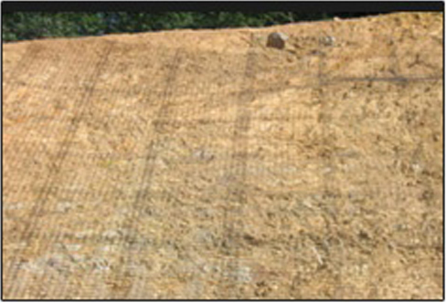

SERVICES
사면보강의 다섯 단계




- 01
스카이드릴 천공
고소 천공 장비로 사람이 닿기 어려운 급경사면도 정확히 천공합니다.
- 02
와이어메쉬 설치
사면 전체를 철망으로 덮어 표층의 붕괴와 낙석을 막습니다.
- 03
록볼트 · 배수공
록볼트로 지반을 묶고, 배수공으로 비가 와도 수압이 쌓이지 않게 합니다.
- 04
대형 숏크리트 타설
대형 숏크리트 머신으로 넓은 사면을 빠르고 고르게 타설합니다.
- 05
타설 완료
균일한 두께로 마감해 오래 견디는 사면을 만듭니다.